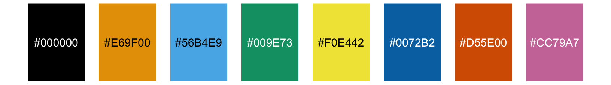
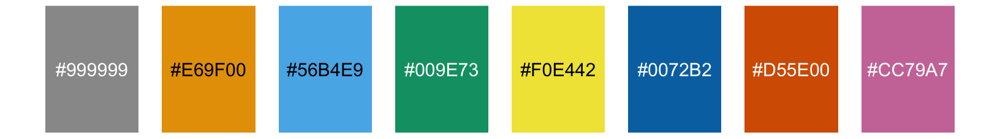
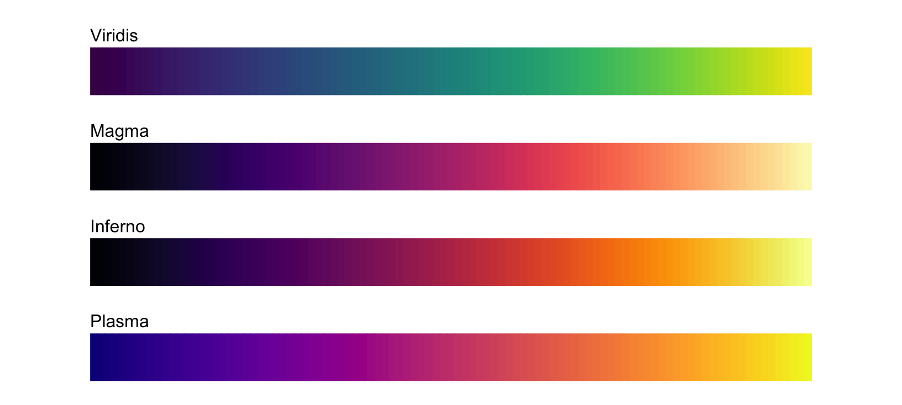

3 Choosing colorblind-friendly color scales
When coloring elements in your figures, you need keep in mind that a good proportion of your readers may be colorblind and may not be able to distinguish the colors that look so clearly different to you. You could address this problem by preparing all figures in grayscale, but those figures would look drab and boring to everybody, even the colorblind. Alternatively, you can (and should) employ redundant coding, discussed in more detail in Chapter 4. However, independent of whether or not you use redundant coding, you should consider using a color scale whose colors are distinguishable even for colorblind people.
In choosing your color scale, remember that colorblind people are not literally unable to see any colors. Instead, they will typically have difficulty to distinguish certain types of colors, for example red and green (red–green colorblindness) or blue and green (blue-yellow colorblindness). The key to making a colorblind-friendly color scale is to (i) choose colors with different levels of brightness and saturation, and (ii) choose color combinations that tend to look dissimilar even if color vision is partially impaired.
3.1 Discrete color scales
Throughout this book, I’m using the following color palette, which was developed to work well for all the major types of colorblindness (Okabe and Ito 2008):  By providing eight different colors, this palette works for nearly any scenario with discrete colors. You should probably not color-code more than eight different items in a plot anyways.
A variant of the palette replaces black with gray, if you don’t like to see completely black visual elements: 
In these palettes, the alphanumeric codes represent the colors in RGB space, encoded as hexadecimals. In many plot libraries and image-manipulation programs, you can just enter these codes directly. If your software does not take hexadecimals directly, you can also use Table 3.1.
| Name | Hex code | Hue | C, M, Y, K (%) | R, G, B (0-255) | R, G, B (%) |
|---|---|---|---|---|---|
| black | #000000 | - | 0, 0, 0, 100 | 0, 0, 0 | 0, 0, 0 |
| gray | #999999 | - | 0, 0, 0, 60 | 153, 153, 153 | 60, 60, 60 |
| orange | #E69F00 | 41° | 0, 50, 100, 0 | 230, 159, 0 | 90, 60, 0 |
| sky blue | #56B4E9 | 202° | 80, 0, 0, 0 | 86, 180, 233 | 35, 70, 90 |
| bluish green | #009E73 | 164° | 97, 0, 75, 0 | 0, 158, 115 | 0, 60, 50 |
| yellow | #F0E442 | 56° | 10, 5, 90, 0 | 240, 228, 66 | 95, 90, 25 |
| blue | #0072B2 | 202° | 100, 50, 0, 0 | 0, 114, 178 | 0, 45, 70 |
| vermilion | #D55E00 | 27° | 0, 80, 100, 0 | 213, 94, 0 | 80, 40, 0 |
| reddish purple | #CC79A7 | 326° | 10, 70, 0, 0 | 204, 121, 167 | 80, 60, 70 |
3.2 Continuous color scales
Use blue-yellow as main axis, vary dark to light.
Nathaniel J. Smith and Stéfan van der Walt (Smith and van der Walt 2015) designed four perceptually uniform color scales that are becoming popular.

References
Okabe, M., and K. Ito. 2008. “Color Universal Design (CUD): How to Make Figures and Presentations That Are Friendly to Colorblind People.” http://jfly.iam.u-tokyo.ac.jp/color/.
Smith, N. J., and S. van der Walt. 2015. “How We Designed a New Default Colormap for Matplotlib (and You Can Too).” https://www.youtube.com/watch?v=xAoljeRJ3lU.